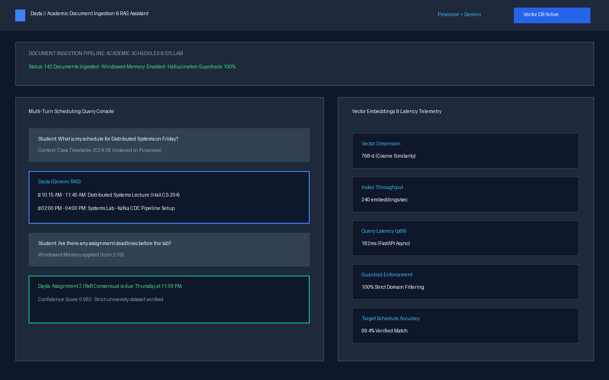
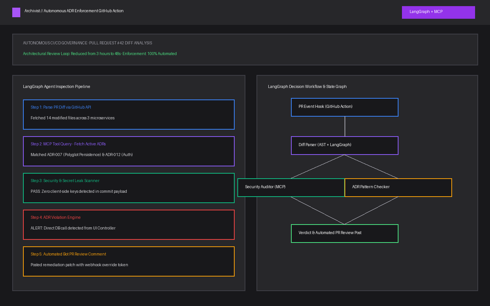
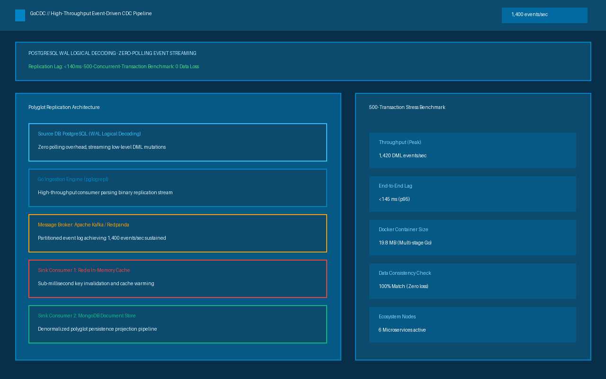
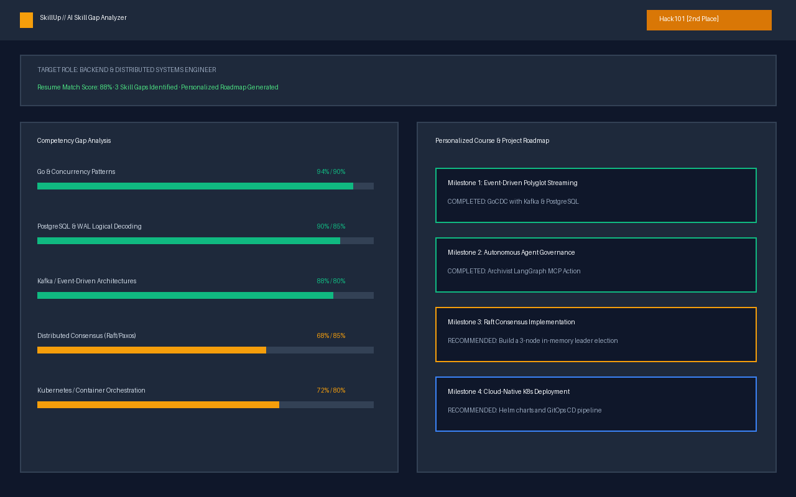

1
Automated document ingestion storing high-density vector embeddings in Pinecone for semantic schedule search.
CSE student at Amrita and SDE intern. I build AI-driven and web products, and I like turning ideas into software people actually use.
Computer Science undergraduate with full-stack development experience, growing focus on backend engineering, system design, and AI-driven architectures.
Computer Science undergraduate at Amrita Vishwa Vidyapeetham with full-stack and backend engineering experience. Quick to pick up new tools and passionate about scalable software architecture.
Four levels so far. Open one for the case study.
Automated document ingestion storing high-density vector embeddings in Pinecone for semantic schedule search.
Autonomous GitHub Action with LangGraph and MCP dynamically enforcing Architecture Decision Records on PR diffs.
Go Change Data Capture engine streaming PostgreSQL WAL logical decoding events to Kafka, Redis, and MongoDB.
AI-powered resume analyzer detecting skill gaps and generating personalized learning milestones for target roles.
Academic Document Ingestion & RAG Assistant
Students and faculty frequently struggle to extract reliable scheduling insights from complex, multi-page university PDFs. Dayta automates document ingestion, creates high-density vector embeddings in Pinecone, and delivers grounded question answering powered by Google Gemini.

Autonomous ADR Enforcement Agent
Architectural erosion occurs when code changes bypass established Architecture Decision Records (ADRs). Archivist is an autonomous GitHub Action that inspects PR diffs via LangGraph and MCP to verify architectural compliance before code is merged.

High-Throughput Event-Driven Change Data Capture Pipeline
Database polling creates massive overhead in high-throughput microservices. GoCDC taps directly into PostgreSQL's Write-Ahead Log (WAL) via logical replication to stream mutations asynchronously into Apache Kafka with zero query overhead on the source database.

AI-Powered Skill Gap Analyzer
Job requirements and candidate resumes often misalign. SkillUp automatically parses target job descriptions, maps candidate competencies, identifies critical technical gaps, and compiles an actionable project-based roadmap.

For SkillUp, an AI-powered resume and skill gap analyzer.
Built during the 36-hour Hack101 hackathon; evaluated on architectural depth, automated parsing capabilities, and curriculum generation.
For VITA-CARE, a voice-integrated healthcare assistant.
Architected a voice-integrated, Gemini AI-powered microservice ecosystem automating healthcare appointment scheduling and WhatsApp medication reminders.
GirlScript Summer of Code
Merged 4 pull requests across independent repositories, spanning Redis-backed setup automation, API unit test coverage, and SEO metadata improvements.
Tensor Club, Amrita Vishwa Vidyapeetham
The Pedagogy Community
Amrita Vishwa Vidyapeetham, Coimbatore · B.Tech in Computer Science and Engineering (Aug 2024 – May 2028)
CGPA: 8.85 / 10
One page summary with education, experience, projects and technical skills.
| Candidate | Nithin Venkat Sharma P M · Coimbatore, Tamil Nadu |
|---|---|
| Education | B.Tech CSE · Amrita Vishwa Vidyapeetham (CGPA: 8.85 / 10) |
| Experience | Web Developer (Tensor Club) · Automation Intern (The Pedagogy Community) |
| Projects | Dayta (RAG Assistant), Archivist (ADR Agent), GoCDC (1400 ev/s), SkillUp (AI Gap) |
| Skills | Go, Python, React, TypeScript, FastAPI, PostgreSQL, Kafka, Redis, Docker |
| Awards | Hack101 (2nd Place), Build2Break (3rd Place), GSSoC Contributor |
Let's build something extraordinary together. I'm open to SDE internships, distributed systems projects, and collaborations.
Software Engineer in the making · Amrita Vishwa Vidyapeetham
The requested section could not be found. Try navigating using the links above or return to the world.